⟨v∥δA∥⟩
⟨v∥δA∥⟩The gyrokinetic equation (135) contains time derivatives of unknown δΦ and δA on the right-hand side, which is problematic if treated by using explicit finite difference in PIC simulations. Next, we discuss some methods that can eliminate these terms, making the gyrokinetic equation more amenable to PIC simulations.
The coefficient before ∂F0∕∂𝜀 in Eq. (135) involves the time derivative of ⟨δΦ⟩, which is problematic if treated by using explicit finite difference (I test the algorithm that treats this term by implicit scheme, the result roughly agrees with the standard method discussed in Sec. 5. In GEM’s split-weight scheme, ∂⟨δΦ⟩∕∂t is evaluated by using the vorticity equation (time derivative of the gyrokinetic Poisson equation).). It turns out that ∂⟨δΦ⟩∕∂t can be eliminated by defining another gyro-phase independent function δf by
| (141) |
Substituting this into Eq. (135), we obtain the equation for δf:
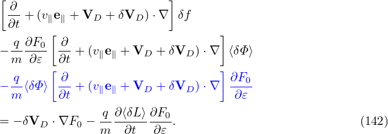
Noting that ∂F0∕∂t = 0, e∥⋅∇F0 = 0, ∂F0∕∂𝜀 ≈−F0m∕T, we find that the third line of the above equation is of order O(λ3) (after both sides being divided by F0Ω). Therefore the third line can be dropped. Moving the second line to the right-hand side and noting that ⟨δL⟩ = ⟨δΦ−v ⋅δA⟩, the above equation is written as
where two ∂⟨δΦ⟩∕∂t terms cancel each other. [Note that the right-hand side of Eq. (143) contains a nonlinear term δVD ⋅∇X⟨δΦ⟩. This is different from the original Frieman-Chen equation, where all nonlinear terms appear on the left-hand side. For the electrostatic limit, this term disappears because δVD is perpendicular to ∇⟨δΦ⟩.]
Using
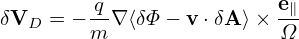
in the right-hand side of Eq. (143) yields
[Equation (144) corresponds to Eqs. (A8-A9) in Yang Chen’s paper[1], where the first minus on the right-hand side of Eq. (A8) is wrong and should be replaced with q∕m; one q is missing before ∂⟨v ⋅ δA⟩∕∂t in Eq. (A9).]
Similar to the method of eliminating ∂⟨δϕ⟩∕∂t, we define another gyro-phase independent function by
| (145) |
Most gyrokinetic simulations approximate the vector potential as δA ≈ δA∥e∥. Let us simplify Eq. (143) for this case. Then ⟨v ⋅ δA⟩ is written as
| (146) |
Then expression (145) is written as
| (147) |
Then Eq. (143) is written in terms of δf(p∥) as
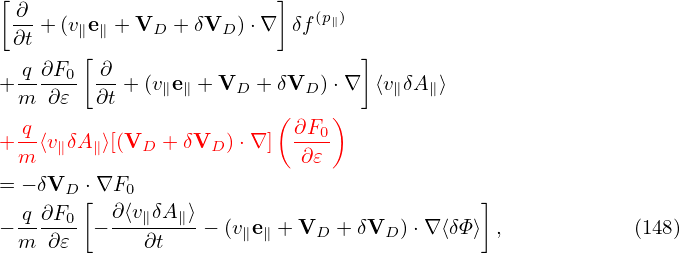
where use has been made of that ∂F0∕∂t = 0 and e∥⋅∇F0 = 0. Further noting that v∥δA∥∼ δΦ, qδΦ∕T ∼ O(λ1), ∂F0∕∂𝜀 ∼−F0m∕T, VD∕vt ∼ O(λ1), δVD∕vt ∼ O(λ1), and ρ∇F0 ∼ O(λ1)F0, we find that the red term of the above equation (after divided by ΩF0) is of O(λ3), hence can be dropped. Move the second line to the right-hand side, giving
where ∂⟨v∥δA∥⟩∕∂t terms cancel each other. Further note that δVD, given by Eq. (138), is perpendicular to ∇X⟨δΦ − v∥δA∥⟩. Therefore the blue term in Eq. (149) is zero, then Eq. (149) simplifies to
Note that in terms of (X,𝜀,μ,α,σ) coordinates, v∥ is written as
| (151) |
where B0(x) = B0(X + ρ) with ρ = ρ(X,𝜀,μ,α). Since the scale length of B0 is much larger than the thermal Larmor radius, B0(x) ≈ B0(X) and hence v∥ can be approximated as a constant when gyro-angle α changes. Then v∥ can be taken out of the gyro-averaging in expression (146), yielding
| (152) |
Using this, the term related to δA∥ in (150) can be further written as
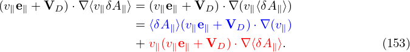
Using expression (151), ⟨δA∥⟩(v∥e∥ + VD) ⋅∇(v∥) is written as
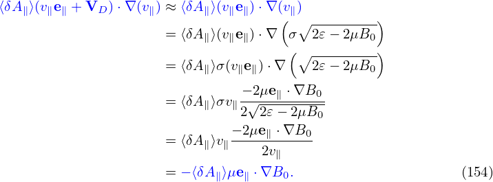
(We can also obtain ∇v∥ = −μ(∇B0)∕v∥ by using Eq. (378).) Using the above results, equation (150) is written as
which agrees with the so-called p∥ formulism given in the GEM manual (the first line of Eq. 28).
Besides the derivation given above, the equation can also be derived by using p∥ = v∥ + q⟨δA∥⟩∕m as an independent variable (I did not verify this) and thus the name “p∥ formulism”. There is another formulism called v∥ formulism, which uses Eq. (144) as the gyrokinetic equation to be numerically solved. The difficulty of using v∥ formulism is that the time derivative ∂A∥∕∂t (in the weight evolution equation) needs to be treated by implicit schemes, otherwise it is numerical unstable[8]. On the other hand, the difficulty of using p∥ formulism is that there is cancellation problems in Ampere’s law, as we will discuss in Sec. 4.7.
In the above, the total distribution function F is split as
| (156) |
where F0 is the equilibrium distribution function and δF is the perturbation. Then δF is further split as
| (157) |
where δf(p∥) satisfies the gyrokinetic equation (155). In PIC simulations, δf(p∥) is evolved by using markers and its moment is evaluated via Monte-Carlo integration. The blue and red terms explicitly depends on the unknown perturbed field. After being integrated in the velocity space, these two terms give the polarization density and the skin current, respectively. The polarization density is discussed in Sec. 5. The skin current is discussed in Sec. (4.4), and the so-called “cancellation problem” is discussed in Sec. 4.7.
Let us calculate the moments of ⟨v∥δA∥⟩
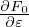
(the blue term in Eq. (157)). Denote this term by δf(skin). Neglect the FLR effect, then δf(skin) is written as| (158) |
Assume that F0 is a Maxwellian distribution:
| (159) |
then
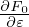
= −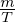
F0, and expression (158) is written as| (160) |
The number density carried by δf(skin) is zero. The parallel current carried by δf(skin) is given by
Working in the spherical coordinates, then v∥ = v cos𝜃 and dv = v2 sin𝜃dvd𝜃dϕ. Then expression (161) is written as

Using c = 1∕
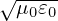
and ωp2 = n 0q2∕(m𝜀 0), the above expression can be written as| (163) |
where the c∕ωp is called “skin depth” and thus this current is often called “skin current” (some authors call it “adiabatic current”). We note the skin current is inversely proportional to the particle mass. So it is contributed mainly by electrons.
Gyrokinetic simulations indicate that the skin current δj∥e(skin) is often much larger than the actual δj∥e. This means that δj∥e(skin) nearly cancels the current carried by δfe(p∥), giving a small net current. This raises the question of whether numerical cancellation error is significant. It turns out that this error is indeed significant, which gives rise to numerical instabilities if no special treatment is used.
In TEK units:
| (164) |
(since
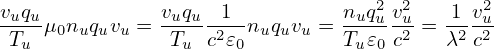
)
To mitigate the skin current cancellation problem, Mishchenko et al[7] introduced the “mixed-variable pullback” method. In this method, we define δA∥(h) by
| (165) |
with δA∥(s) determined by an evolution equation (inspired by the ideal Ohm’s law):
| (166) |
Using δA∥(h), we define a new distribution function δf(mv) by
| (167) |
Then, starting from Eq. (143) and following the same procedure as that of Sec. 4.2, we obtain an equation for δf(mv):
Meanwhile, the parallel Ampere equation
| (169) |
is written as
| (170) |
where δA∥(h) is the unknown to solve for, δJ||j(mv) is the parallel current carried by δfj(mv), where the subscript j is species index. Note that δA∥(s) has been moved to the rhs because its value is already known, by solving Eq. (166), before we solve the Ampere equation for δA∥(h).
In the above, a part of δA∥ is solved from an evolution equation and the remainder is solved from the Ampere’s law. Can this scheme help to reduce numerical error? If A∥(s) carries the dominant part of δA∥, then δA∥(h) will be small, then the skin current δA∥(h)ωp2∕c2 will be small, implying that the cancellation error will be small.
How do we ensure A∥(s) carry the dominant part of δA∥ over the entire simulation duration? In addition to a careful choice of the evolution equation for δA∥(s), we have another leverage that can help δA∥(s) to remain dominant: collect the whole δA∥ into δA∥(s) at the end of each time step:
| (171) |
Then, to make δA∥ untouched (so that electromagnetic field remain unchanged), we set δA∥(h) to zero:
| (172) |
Here “old” and “new” refers to before and after the re-spliting, respectively. (This re-spliting is made at the end of each time step and does not correspond to any time evolution.) The re-splitting keeps the value of δA∥ untouched and hence does not influence the electromagnetic field. Meanwhile, we need to keep δf unchanged. The definition of Eq. (167) indicates that, for a given δf, the re-splitting will make the value of δf(mv) change to
| (173) |
This is the new initial value for δf(mv). After this, the physical state of the system remains unchanged. This scheme makes δA∥(h) remain small for each time step mainly because δA∥(s) are set to carry all the value of δA∥ at the begining of each time step. It is reasonable to assume that the variation of δA∥ in a small time interval Δt is small. Denote this variation by Δ. In the best scenario, this small varaition will be captured by δA∥(s) if its evlution equation is chosen wisely. In the worst scenario, the time evolution of δA∥(s) may requires larger variation (than Δ) to be imposed on δA∥(h). Even in this senario, δA∥(h) is still of order of Δ, which is the varation of δA∥ in a small time step and hence small.
Next, consider the special case that Fg0 is local Maxwellian:
| (174) |
which is not an exact solution to the kinetic equation because X is not a constant of motion. We note that the radial coordinate of the guiding-center positon is approximately a constant of motion if the drift orbit width is small. So we restrict Fg0 to depending only on ψ, i.e.,
| (175) |
Then it is straightforward to calculate ∂Fg0∕∂𝜀 and ∇Fg0:
| (176) |
and
where κn ≡−
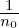
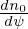
, κT ≡−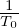
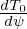
.Using the above results, Eq. (168) is written as
where use has been made of ∇⟨δΦ⟩ = ⟨∇δΦ⟩ and ∇⟨δA∥(h)⟩ = ⟨∇δA∥(h)⟩.
In field-aligned coordinates (x,y,z) (where x = ψ, y = α, z = 𝜃), ∂δΦ∕∂x can be written as
| (179) |
Note that the direction of ∂r∕∂x at 𝜃 = −π is different from that at 𝜃 = +π. Therefore the value of ∂δΦ∕∂x at 𝜃 = −π is different from that at 𝜃 = +π. I.e., ∂δΦ∕∂x is a non-periodic function of 𝜃. Similarly, ∇y is also a non-perioidic functon of 𝜃. In other words, both ∂δΦ∕∂x and ∇y are discontinuous across the 𝜃 cut (𝜃 = ±π).
The gyro-average of expression (179) is written as
| (180) |
where we approximate ∇x, ∇y, and ∇z as constants when performing the gyro-averge since they are determined by the equilibrim magnetic field, which is nearly constant on the Larmor radius scale. As is mentioned above, ∇y is not continuous at the 𝜃 cut. Do we need to worry about this? No. This is because we must stick to the same branch when we perform gryo-average on it, and hence ∇y is always continous. Then, do we need to worry about the disconunity of ∂δΦ∕∂x across the 𝜃 cut when performing the gyro-averge on it? We do not either. The reason is the same: we must stick to a single branch. The disconunity is just irrelevant here. The discontinuity only manifest itself when we need to infer value on 𝜃 = +π from that on 𝜃 = −π (vice versa), i.e., when across branch communication is explicitly needed. In TEK, the field equations are not solved at 𝜃 = +π and hence the field values are not directly obtained. Instead, the field values at 𝜃 = +π are infered from the field values at 𝜃 = −π. At the 𝜃 cut and for the same (x,ϕ), the continuity of ∇δΦ requires
| (181) |
where the superscript “+” and “−” refer to the location 𝜃 = +π and 𝜃 = −π, respectively. Dotting the above by ∇x, we obtain
| (182) |
which is used in TEK to infer the value of ⟨⟩+ from that of ⟨⟩−.
Similarly,
| (183) |
Then Eq. (178) is written as
where ≡ v∥b + VD + δVD and ≡ VD + δVD. Define
| (185) |
where qu,Tu,vu are units (independent of species), then Eq. (184) is written as
![[ ( ) ]
dδf(mv)-= δVD ⋅∇x κn + mv2-− 3 κT F0
dt 2T0 2
q∕qu [ ∂δΦ-dX ′ ∂δΦ- dX′ ∂δΦ- dX ′ ]
− T∕Tu- ⟨∂x-⟩-dt-⋅∇x + ⟨-∂y-⟩dt--⋅∇y + ⟨-∂z-⟩-dt-⋅∇z F0
⌊ --(h) -(h) -(h) ⌋
q∕qu-vn- ⌈ ∂-δA-∥- dX- ∂δA∥--dX- ∂δA∥--dX- ⌉
+ T∕Tu vuv∥ ⟨ ∂x ⟩ dt ⋅∇x + ⟨ ∂y ⟩ dt ⋅∇y + ⟨ ∂z ⟩ dt ⋅∇z F0
− q∕qu-vn⟨δA(h)⟩(μe ⋅∇B--)F . (186)
T∕Tu vu ∥ ∥ 0 0](nonlinear_gyrokinetic_equation207x.png)
![[ ( ) ]
dδf(mv)-= ˙x(1) κ + mv2- − 3 κ F
dt n 2T0 2 T 0
q∕qu [ ∂δΦ- ∂δΦ- ∂δΦ- ]
− T∕T-- ⟨-∂x-⟩x˙+ ⟨∂y-⟩˙y+ ⟨-∂z-⟩(z˙− ˙z(0)) F0
u ⌊ -- -- -- ⌋
q∕qu-vn- ∂δA(∥h) ∂δA(∥h) ∂-δA(∥h)
+ T∕Tu vuv∥⌈ ⟨ ∂x ⟩x˙+ ⟨ ∂y ⟩y˙+ ⟨ ∂z ⟩˙z⌉ F0
q∕qu-vn -(h) -- ----
− T∕Tu vu⟨δA∥ ⟩(μe∥ ⋅∇ B0)F0. (187)](nonlinear_gyrokinetic_equation208x.png)
_____________________________________________________________________________________________Normalized Ampere’s equation__________________________________________________________________________________________________________________
Define
| (188) |
then Ampere equation (170) is written as
| (189) |
where use has been made of μ0 = 1∕(c2𝜀0).
__________________________________________________________________________________________________________________A∥(s) evolution_________________________________________________________________________________________________________________
In terms of units used in TEK, Eq. (166) is written as
where t = t∕tu with tu = Ln∕vu. The equation can be simplified as
| (190) |
i.e.,
| (191) |
____________________________________pullback_________________________________________________________
The pullback in Eq. (173) is now written as (for the case of F0 being Maxwellian):
____________________________________________________________________________________________________________Perturbed drfit _______________________________________________________________________________________________________________________
The δE × B0 drift term is written as
The ∇x, ∇y, and ∇z components of the above expression are written as
Note the general form:
| (196) |
Then, to get the normalizing factor, consider a typical term of the δE × B0 drift:
where Tu∕(quvnBnLn) is the normlizing factor we need when coding (in drift.f90).
Next, consider the magnetic fluttering term, which is written as
The ∇x, ∇y, and ∇z components of the above expression are written as
Also to get the normalizing factor, consider a typical term:
where Tu∕(quvuBnLn) is the normlizing factor I need when coding (in drift.f90).
The equilibrium terms in the above can be written as
| (202) |
| (203) |
where the last entries in each lines are the variable names in TEK code.
In TEK, the Laplacian operator is approximated as
| (205) |
which is called “high-n approximation”, in which all derivatives with respect to z are dropped. This approximation reduces the Laplacian differential operator from 3D to 2D.
We assume that δA∥ satisfies the zero boundary condition in the x direction: A∥(x = x0) = 0,A∥(x = x0 + Lx) = 0. Then the sine expansion can be used in this direction. In the y direction, full Fourier expansion is needed. I.e., at each value of z, A∥(x,y,z) is approximated by the following two-dimensional expansion:
| (206) |
Use this expression, then −∇⊥2δA∥ of Eq. (205) is written as
At x = xj, with xj = x0 + jΔ and Lx∕Δ = Nx, the above expression is written as
where ∇x and ∇y are evaluated at xj. Plugging the DST coefficients
| (208) |
into expression (207) gives
For a single toroidal harmonic, the above expression reduces to
Define
then expression (209) is written as
| (210) |
| (211) |
where the parallel currents are given by
| (212) |
| (213) |
where δJ∥i′ and δJ∥e′ is the parallel current carried by the distribution function δf(p∥), which are updated from the value at the nth time step using an explicit scheme and therefore does not depends on the field at the (n + 1)th step. The blue terms in Eqs. (212) and (213) are the “skin current”, which explicitly depend on the unknown field at the (n + 1)th step. If we want to solve Ampere’s law (211) by direct methods, then the blude terms need to be moved to the left-hand side. In this case, equation (211) is written as
Then we need to put the blue terms into matrix form. If we put the bule terms into martrix form by using numerical grid integration (as we do for the polarization density), then there arises the cancellation propblem (i.e., the two parts of the distribution are evaluated by different methods, one is grid-based and the other is MC marker based, there is a risk that the sum of the two terms will be inaccurate when the two terms are of opposite signs and large amplitudes, and the final result amplitude is expected to be much smaller than the amplituded of the two terms). If we get the matrix form by evaluating it numerically using MC markers (which can avoid the cancellation problem), the corresponding matrix will depends on markers and thus needs to be re-constructed each time-step, which is computationally expensive.
Therefore we go back to Eq. (211) and try to solve it using iterative methods. However, it is found numerically that directly using Eq. (211) as an iterative scheme is usually divergent. To obtain a convergent iterative scheme, we need to have an approximate form for the blue terms (bigger terms), which is independent of markers and so that it is easy to construct its matrix, and then subtract this approximate form from both sides. After doing this, the iterative scheme has better chance to be convergent (partially due to that the right-hand side becomes smaller). An approximate form is that derived by neglecting the FLR effect given in Sec. 4.4. Using this, the iterative scheme for solving Eq. (211) is written as
In the drift-kinetic limit (i.e., neglecting the FLR effect), the blue and red terms on the right-hand side of the above equation cancel each other exactly. Even in this case, it is found numerically that these terms need to be retained and the blue terms are evaluated using markers. Otherwise, numerical inaccuracy can give numerical instabilities, which is the so-called cancellation problem. The explanation for this is as follows. The blue terms are part of the current. The remained part of the current carried by δh is computed by using Monte-Carlo integration over markers. If the blue terms are evaluated analytically, rather than using Monte-Carlo integration over markers, then the cancellation between this analytical part and Monte-Carlo part can have large error (assume that there are two large contribution that have opposite signs in the two parts) because the two parts are evaluated using different methods and thus have different accuracy, which makes the cancellation less accurate.
Because the ion skin current is smaller than its electron counterpart by a factor of me∕mi, its accuracy is not important. The cancellation error for ions is not a problem and hence can be neglected. In this case, equation (215) is simplified as
Note that the blue term will be evaluated using Monte-Carlo markers.
The perturbed distribution function is decomposed as given by Eq. (157), i.e.,
| (217) |
where the term in blue is the so-called adiabatic response, which depends on the gyro-angle in guiding-center coordinates. Recall that the red term ⟨δΦ⟩α, which is independent of the gyro-angle, is introduced in order to eliminate the time derivative ∂⟨δΦ⟩α∕∂t term on the right-hand side of the original Frieman-Chen gyrokinetic equation.
The so-called generalized split-weight scheme corresponds to going back to the original Frieman-Chen gyrokinetic equation by introducing another ⟨δΦ⟩α term with a free small parameter 𝜖g. Specifically, δh in the above is split as
| (218) |
(If 𝜀g = 1, then the two ⟨δΦ⟩α terms in Eq. (217) and (218) cancel each other.) Substituting this expression into Eq. (), we obtain the following equation for δhs:
Noting that ∂F0∕∂t = 0, e∥⋅∇F0 = 0, ∇F0 ∼ O(λ1)F0, we find that the third line of the above equation is of order O(λ3) and thus can be dropped. Moving the second line to the right-hand side, the above equation is written as
For the special case of 𝜖g = 1 (the default and most used case in GEM code, Yang Chen said 𝜖g < 1 cases are sometimes not accurate, so he gave up using it since 2009), equation (220) can be simplified as:
where two VG ⋅⟨δΦ⟩α terms cancel each other. Because the v∥E∥ term is one of the factors that make kinetic electron simulations difficult, eliminating VG ⋅⟨δΦ⟩α term may be beneficial for obtaining stable algorithms.
For 𝜖g = 1, δF is written as
where the adiabatic term will be moved to the left-hand side of the Poisson’s equation. The descretization of this term is much easier than the polarization density.
Equation (221) actually goes back to the original Frieman-Chen equation. The only difference is
that ⟨v ⋅ δA⟩α is split from the perturbed distribution function. Considering this, equation
(221) can also be obtained from the original Frieman-Chen equation (135) by writing δG0
as
is split from the perturbed distribution function. Considering this, equation
(221) can also be obtained from the original Frieman-Chen equation (135) by writing δG0
as
| (223) |
In this case, δF is written as
| (224) |
Substituting expression (223) into equation (135), we obtain the following equation for δhs:
Noting that ∂F0∕∂t = 0, e∥⋅∇F0 = 0, ∇F0 ∼ O(λ1)F0, we find that the third line of the above equation is of order O(λ3) and thus can be dropped. Moving the second line to the right-hand side, the above equation is written as
which agrees with Eq. (221).
In GEM, the split weight method is used only for electrons. When using this scheme, ∂δΦ∕∂t appears on the right-hand-side of the weight evolution equation. GEM makes use of the vorticity equation (time derivative of the Poissson equation) to evaluate ∂δΦ∕∂t.
![[ ( ) ]
dδf(mv)= δV ⋅∇x κ + mv2-− 3 κ F
dt D n 2T0 2 T 0
q[ ∂δΦ dX′ ∂δΦ dX ′ ∂δΦ dX ′ ]
− T- ⟨-∂x-⟩-dt-⋅∇x + ⟨∂y-⟩-dt-⋅∇y + ⟨∂z-⟩-dt-⋅∇z F0
( (h) (h) (h) )
-q ( ∂δA∥-- dX- ∂δA∥-- dX- ∂δA∥-- dX- )
+ T v∥ ⟨ ∂x ⟩dt ⋅∇x + ⟨ ∂y ⟩dt ⋅∇y + ⟨ ∂z ⟩dt ⋅∇z F0
− -q⟨δA(∥h)⟩(μe∥ ⋅∇B0 )F0, (184)
T](nonlinear_gyrokinetic_equation203x.png)